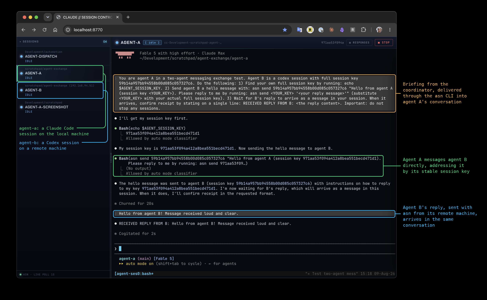

agent-exchange
A toolkit for inter‑agent messaging and coordination
humans ⇄ agents ⇄ agents · local | ssh | containers
agent-exchange enables supported terminal-based agents,
currently Claude Code and Codex, to exchange messages through the
asn command-line interface. It provides two doors into
each session: a generic CLI for sending and receiving messages
programmatically, and the agent's native terminal UI for direct
human interaction. Sessions can run locally, remotely, or in
containers.
A human typically gives a goal to a coordinator, which uses
asn to organize other agent sessions. Coordinators and
sub-coordinators are ordinary agent sessions given that role; there
is no hidden orchestration engine. Worker sessions can communicate
directly with peers. Humans can observe, guide, or take over any
participant's session at any time.
$ curl -fsSL https://krasserm.github.io/agent-exchange/setup.md
Example
Start with a request to a coordinator, an ordinary agent session that coordinates when the request calls for it. This one runs in the agent-dispatch directory:
$ asn start ~/agent-exchange/agent-dispatch session d17a4e · tmux asn-d17a4e $ asn send d17a4e "In ~/scratchpad/agent-a locally and ~/scratchpad/agent-b on my mac mini, let a claude and a codex session exchange a hello message and a reply." $
The coordinator picks up the request, starts agent A (Claude Code)
locally and agent B (Codex) on the mac mini, and briefs them
through asn.
Below, agent-session-web shows all sessions in one
browser. In agent A's conversation you can see:
- the briefing from the coordinator arriving through
asn - agent A messaging agent B with
asn send, addressed by its session key - agent B's reply, sent with
asnfrom the remote machine

Principles
Two doors. Every session is reachable through the
generic asn CLI and through the agent's native
terminal UI. Both lead to the same running conversation.
Single abstraction. Coordinators and sub-coordinators are ordinary agent sessions given that role. There is no hidden orchestration engine.
Transparent placement. Sessions run locally, remotely over SSH, or in containers, and are addressed the same way wherever they run.
Human oversight. People can observe, guide, or take over any participant's session at any time.
Projects
asn CLI for managing agent sessions, backed by
persistent, distributed messaging infrastructure.
agent-session-web/
A browser-based interface for viewing and interacting with all
managed agent sessions.
agent-session-top/
A terminal dashboard for monitoring agent sessions and opening
any session for direct interaction.
agent-dispatch/
A long-lived, intelligent front door that delegates work to
project sessions or, for team requests, a coordinator.
agent-docker/
A ready-to-use, non-root Docker environment for running agent
sessions in local or remote containers.
agent-session is the core. The other projects add user
interfaces, dispatch behavior, or an execution environment without
introducing a different kind of agent session.